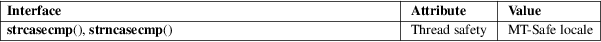

strcasecmp, strncasecmp − compare two strings ignoring case
Standard C library (libc, −lc)
#include <strings.h>
int
strcasecmp(const char *s1, const char
*s2);
int strncasecmp(const char
s1[.n], const char
s2[.n], size_t
n);
The strcasecmp() function performs a byte-by-byte comparison of the strings s1 and s2, ignoring the case of the characters. It returns an integer less than, equal to, or greater than zero if s1 is found, respectively, to be less than, to match, or be greater than s2.
The strncasecmp() function is similar, except that it compares no more than n bytes of s1 and s2.
The strcasecmp() and strncasecmp() functions return an integer less than, equal to, or greater than zero if s1 is, after ignoring case, found to be less than, to match, or be greater than s2, respectively.
For an explanation of the terms used in this section, see attributes(7).

POSIX.1-2008.
4.4BSD, POSIX.1-2001.
The strcasecmp() and strncasecmp() functions first appeared in 4.4BSD, where they were declared in <string.h>. Thus, for reasons of historical compatibility, the glibc <string.h> header file also declares these functions, if the _DEFAULT_SOURCE (or, in glibc 2.19 and earlier, _BSD_SOURCE) feature test macro is defined.
The POSIX.1-2008 standard says of these functions:
When the LC_CTYPE category of the locale being used is from the POSIX locale, these functions shall behave as if the strings had been converted to lowercase and then a byte comparison performed. Otherwise, the results are unspecified.
memcmp(3), strcmp(3), strcoll(3), string(3), strncmp(3), wcscasecmp(3), wcsncasecmp(3)